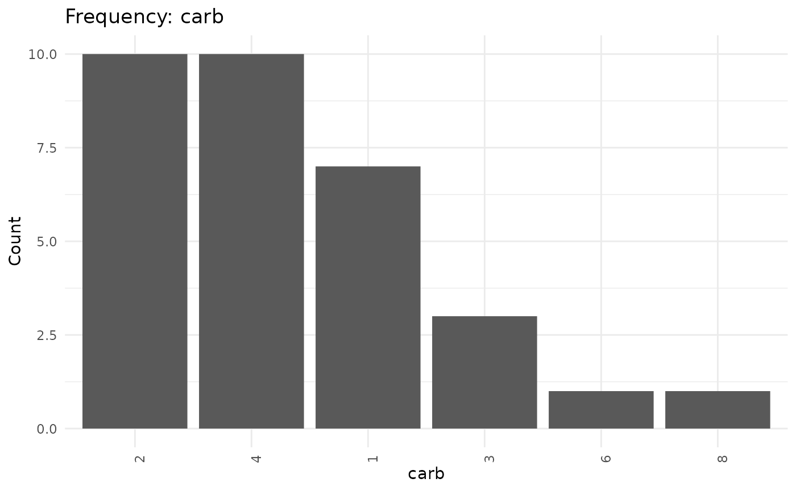

Printing
This package provides a easy to produce frequency tables. It is built to print nicely both in the console and in knitted documents (i.e. in Rmarkdown or Quarto). It should produce attractive console, html, pdf, and word output.
Console
freq(iris, Species, markdown = FALSE, plot = FALSE)
Variable: Species
Class: factor
NAs: 0 (0.0%)
════════════════════════════════════════════════════════════
Species Freq % Cum. Freq Cum. %
────────────────────────────────────────────────────────────
setosa 50 33.3 50 33.3
versicolor 50 33.3 100 66.7
virginica 50 33.3 150 100.0
────────────────────────────────────────────────────────────
Total 150 100% 150 100%
════════════════════════════════════════════════════════════HTML
freq(iris, Species, markdown = TRUE, plot = FALSE)| Species | Freq | % | Cum. Freq | Cum. % |
|---|---|---|---|---|
| setosa | 50 | 33.3 | 50 | 33.3 |
| versicolor | 50 | 33.3 | 100 | 66.7 |
| virginica | 50 | 33.3 | 150 | 100.0 |
| Total | 150 | 100% |
freq(iris, Species, markdown = TRUE, plot = FALSE)| Species | Freq | % | Cum. Freq | Cum. % |
|---|---|---|---|---|
| setosa | 50 | 33.3 | 50 | 33.3 |
| versicolor | 50 | 33.3 | 100 | 66.7 |
| virginica | 50 | 33.3 | 150 | 100.0 |
| Total | 150 | 100% |
Word
freq(iris, Species, markdown = TRUE, plot = FALSE)| Species | Freq | % | Cum. Freq | Cum. % |
|---|---|---|---|---|
| setosa | 50 | 33.3 | 50 | 33.3 |
| versicolor | 50 | 33.3 | 100 | 66.7 |
| virginica | 50 | 33.3 | 150 | 100.0 |
| Total | 150 | 100% |
Tidyverse
It is designed to be fit into a piped/Tidyverse workflow.
Thus, the first parameter should be a data.frame (or tibble) and the second parameter an unquoted variable from the specified data.frame
| status | Freq | % | Cum. Freq | Cum. % |
|---|---|---|---|---|
| tropical storm | 6,684 | 35.1 | 6,684 | 35.1 |
| hurricane | 4,684 | 24.6 | 11,368 | 59.6 |
| tropical depression | 3,525 | 18.5 | 14,893 | 78.1 |
| extratropical | 2,068 | 10.8 | 16,961 | 89.0 |
| other low | 1,405 | 7.4 | 18,366 | 96.3 |
| subtropical storm | 292 | 1.5 | 18,658 | 97.9 |
| subtropical depression | 151 | 0.8 | 18,809 | 98.7 |
| disturbance | 146 | 0.8 | 18,955 | 99.4 |
| tropical wave | 111 | 0.6 | 19,066 | 100.0 |
| Total | 19,066 | 100% |
or
storms |>
freq(status, plot = FALSE)| status | Freq | % | Cum. Freq | Cum. % |
|---|---|---|---|---|
| tropical storm | 6,684 | 35.1 | 6,684 | 35.1 |
| hurricane | 4,684 | 24.6 | 11,368 | 59.6 |
| tropical depression | 3,525 | 18.5 | 14,893 | 78.1 |
| extratropical | 2,068 | 10.8 | 16,961 | 89.0 |
| other low | 1,405 | 7.4 | 18,366 | 96.3 |
| subtropical storm | 292 | 1.5 | 18,658 | 97.9 |
| subtropical depression | 151 | 0.8 | 18,809 | 98.7 |
| disturbance | 146 | 0.8 | 18,955 | 99.4 |
| tropical wave | 111 | 0.6 | 19,066 | 100.0 |
| Total | 19,066 | 100% |
Other Accepted Inputs
Alternatively, freq will detect if you pass a vector as
the first parameter and produce a frequency table from it.
freq(storms$category, plot = FALSE)| category | Freq | % | Cum. Freq | Cum. % |
|---|---|---|---|---|
| NA | 14,382 | 75.4 | 14,382 | 75.4 |
| 1 | 2,478 | 13.0 | 16,860 | 88.4 |
| 2 | 973 | 5.1 | 17,833 | 93.5 |
| 3 | 579 | 3.0 | 18,412 | 96.6 |
| 4 | 539 | 2.8 | 18,951 | 99.4 |
| 5 | 115 | 0.6 | 19,066 | 100.0 |
| Total | 19,066 | 100% |
or
freq(storms[["category"]], plot = FALSE)| category | Freq | % | Cum. Freq | Cum. % |
|---|---|---|---|---|
| NA | 14,382 | 75.4 | 14,382 | 75.4 |
| 1 | 2,478 | 13.0 | 16,860 | 88.4 |
| 2 | 973 | 5.1 | 17,833 | 93.5 |
| 3 | 579 | 3.0 | 18,412 | 96.6 |
| 4 | 539 | 2.8 | 18,951 | 99.4 |
| 5 | 115 | 0.6 | 19,066 | 100.0 |
| Total | 19,066 | 100% |
Assigning Results
Results need not be printed. Results, instead, can be assigned to a variable. The results will be a data.fram with a class of both “simplefreqs_freq” and “data.frame”.
df <- freq(mtcars, cyl)
class(df)
[1] "simplefreqs_freq" "data.frame" This object will continue to print as a
simplefreqs_freqs.
df <- freq(mtcars, carb)
df
| carb | Freq | % | Cum. Freq | Cum. % |
|---|---|---|---|---|
| 2 | 10 | 31.2 | 10 | 31.2 |
| 4 | 10 | 31.2 | 20 | 62.5 |
| 1 | 7 | 21.9 | 27 | 84.4 |
| 3 | 3 | 9.4 | 30 | 93.8 |
| 6 | 1 | 3.1 | 31 | 96.9 |
| 8 | 1 | 3.1 | 32 | 100.0 |
| Total | 32 | 100% |
If needed, you can remove the “simplefreqs_freq” class and the object will print as a regular data.frame.
df <- freq(mtcars, carb)
df <- as.data.frame(df)
class(df)
[1] "data.frame"
df
carb freq proportion cum_freq cum_proportion
1 2 10 0.31250 10 0.31250
2 4 10 0.31250 20 0.62500
3 1 7 0.21875 27 0.84375
4 3 3 0.09375 30 0.93750
5 6 1 0.03125 31 0.96875
6 8 1 0.03125 32 1.00000Plots
By default, a simple bar chart is produced alongside the frequency table.
freq(iris, Species)
| Species | Freq | % | Cum. Freq | Cum. % |
|---|---|---|---|---|
| setosa | 50 | 33.3 | 50 | 33.3 |
| versicolor | 50 | 33.3 | 100 | 66.7 |
| virginica | 50 | 33.3 | 150 | 100.0 |
| Total | 150 | 100% |
Plots can be supressed.
freq(iris, Species, plot = FALSE)| Species | Freq | % | Cum. Freq | Cum. % |
|---|---|---|---|---|
| setosa | 50 | 33.3 | 50 | 33.3 |
| versicolor | 50 | 33.3 | 100 | 66.7 |
| virginica | 50 | 33.3 | 150 | 100.0 |
| Total | 150 | 100% |
Sorting
By default, results are sorted in descending order by frequency.
freq(mtcars, cyl, sort = TRUE, plot = FALSE)| cyl | Freq | % | Cum. Freq | Cum. % |
|---|---|---|---|---|
| 8 | 14 | 43.8 | 14 | 43.8 |
| 4 | 11 | 34.4 | 25 | 78.1 |
| 6 | 7 | 21.9 | 32 | 100.0 |
| Total | 32 | 100% |
Alternatively, sorting can be supressed. In that case, results will be sorted by the variables labels. For character variables, it will be alphabetic, for factors it will in order of the levels.
freq(mtcars, cyl, sort = FALSE, plot = FALSE)| cyl | Freq | % | Cum. Freq | Cum. % |
|---|---|---|---|---|
| 4 | 11 | 34.4 | 11 | 34.4 |
| 6 | 7 | 21.9 | 18 | 56.2 |
| 8 | 14 | 43.8 | 32 | 100.0 |
| Total | 32 | 100% |
NAs
NAs are, by default, included and treated as any other level of the variable.
df <- storms |>
freq(category, na.rm = FALSE, plot = FALSE)
df| category | Freq | % | Cum. Freq | Cum. % |
|---|---|---|---|---|
| NA | 14,382 | 75.4 | 14,382 | 75.4 |
| 1 | 2,478 | 13.0 | 16,860 | 88.4 |
| 2 | 973 | 5.1 | 17,833 | 93.5 |
| 3 | 579 | 3.0 | 18,412 | 96.6 |
| 4 | 539 | 2.8 | 18,951 | 99.4 |
| 5 | 115 | 0.6 | 19,066 | 100.0 |
| Total | 19,066 | 100% |
Alternatively, NAs can be removed. In that case, NAs will not be included in the frequency table, but two relevent attribute will be set on the results. “na” will include the number of NAs removed and na_removed will be set to TRUE.
df <- storms |>
freq(category, na.rm = TRUE, plot = FALSE)
df| category | Freq | % | Cum. Freq | Cum. % |
|---|---|---|---|---|
| 1 | 2,478 | 52.9 | 2,478 | 52.9 |
| 2 | 973 | 20.8 | 3,451 | 73.7 |
| 3 | 579 | 12.4 | 4,030 | 86.0 |
| 4 | 539 | 11.5 | 4,569 | 97.5 |
| 5 | 115 | 2.5 | 4,684 | 100.0 |
| Total | 4,684 | 100% |
attr(df, "na", exact = TRUE)
[1] 14382
attr(df, "na_removed", exact = TRUE)
[1] TRUEMarkdown
simplefreqs::freq tries to intuit if you are printing to
the console or are knitting a document. In some cases, you may need to
directly specify the type of output you want to display using the
markdown parameter. Set to FALSE when you wish
to print for the console.
freq(iris, Species, markdown = FALSE, plot = FALSE)
Variable: Species
Class: factor
NAs: 0 (0.0%)
════════════════════════════════════════════════════════════
Species Freq % Cum. Freq Cum. %
────────────────────────────────────────────────────────────
setosa 50 33.3 50 33.3
versicolor 50 33.3 100 66.7
virginica 50 33.3 150 100.0
────────────────────────────────────────────────────────────
Total 150 100% 150 100%
════════════════════════════════════════════════════════════Set to markdown = TRUE when you wish to include in a
knitted document.
freq(iris, Species, markdown = TRUE, plot = FALSE)| Species | Freq | % | Cum. Freq | Cum. % |
|---|---|---|---|---|
| setosa | 50 | 33.3 | 50 | 33.3 |
| versicolor | 50 | 33.3 | 100 | 66.7 |
| virginica | 50 | 33.3 | 150 | 100.0 |
| Total | 150 | 100% |
Weighting
Results can be optionally weighted by providing a vector of weight values.
freq(iris, Species, wt = Sepal.Length, plot = FALSE)| Species | Freq | % | Cum. Freq | Cum. % |
|---|---|---|---|---|
| virginica | 329.4 | 37.6 | 329.4 | 37.6 |
| versicolor | 296.8 | 33.9 | 626.2 | 71.4 |
| setosa | 250.3 | 28.6 | 876.5 | 100.0 |
| Total | 876 | 100% |
Optional Formatting
The printed results are highly customizable, both for console output
and for HTML output (PDF and Word output is less customizable). There
are many available options that control how these tables print. You can
set these options per session (using
options(simplefreqs.OPTION = VALUE)) or by adding the
similar lines to your project or global .RProfile file.
The exposed customization options are:
- simplefreqs.inner_table_padding
- simplefreqs.table_symbol
- simplefreqs.row_divider_symbol
- simplefreqs.print_table_symbol
- simplefreqs.print_table_total_row
- simplefreqs.print_table_metadata
- simplefreqs.print_header_divider
- simplefreqs.big_mark
- simplefreqs.decimal_digits
- OutDec (base option controling decimal mark)